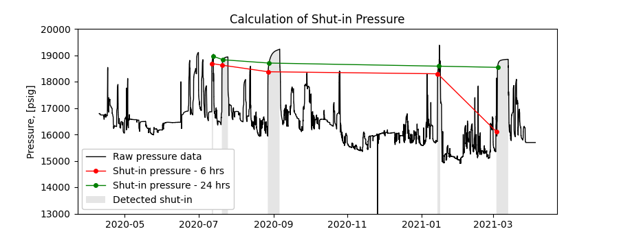

Note
Click here to download the full example code
Calculation of shut-in pressure
In reservoir and production engineering, knowledge of the shut-in pressure can help estimate reservoir properties, drawdown and productivity index. In this example, we use data from the bottom-hole pressure signal to calculate shut-in pressure after 6 and 24 hrs of the shut-in. The CSV file also contains a column with binary signal obtained from the shut-in detector. The signal was obtained using wing valve data of the corresponding well and using the following settings in the detector function: wing valve threshold is calculated, minimum duration of shut-in is 25 hrs and minimum distance between shut-ins is 24 hrs.
The figure shows the original pressure signal, 6 and 24 hrs shut-in pressure values as well as detected shut-ins.
import os
import matplotlib.pyplot as plt
import pandas as pd
from indsl.oil_and_gas.shut_in_variables import calculate_shutin_variable as shvar
# Dataset contains the following columns: ["Bottom_Hole_Pressure", "Shut_in_detected_25hrs"]
base_path = "" if __name__ == "__main__" else os.path.dirname(__file__)
data = pd.read_csv(
os.path.join(base_path, "../../datasets/data/shut_in_pressure_data.gz"),
compression="gzip",
index_col=0,
parse_dates=True,
dtype={"Shut_in_detected_25hrs": int},
)
# TODO: Create load_pressure_shut_in_data method from above
fig, ax = plt.subplots(figsize=[9, 3.5])
ax.plot(data["Bottom_Hole_Pressure"], label="Raw pressure data", color="k", linewidth=1)
# Plot 6 hr shut-in pressure
ax.plot(
shvar(data["Bottom_Hole_Pressure"], data["Shut_in_detected_25hrs"], 6),
label="Shut-in pressure - 6 hrs",
color="r",
linewidth=1,
marker="o",
markersize=4,
)
# Plot 24 hr shut-in pressure
ax.plot(
shvar(data["Bottom_Hole_Pressure"], data["Shut_in_detected_25hrs"], 24),
label="Shut-in pressure - 24 hrs",
color="g",
linewidth=1,
marker="o",
markersize=4,
)
# plot previously detected shut-ins
ax.fill_between(
data.index,
data["Bottom_Hole_Pressure"] * (~data["Shut_in_detected_25hrs"] + 2),
alpha=0.2,
facecolor="gray",
label="Detected shut-in",
)
ax.set_ylabel("Pressure, [psig]")
ax.set_title("Calculation of Shut-in Pressure")
ax.set_ylim(13000, 20000)
plt.legend(loc=3, facecolor="white", framealpha=1)
plt.show()
Total running time of the script: ( 0 minutes 0.908 seconds)